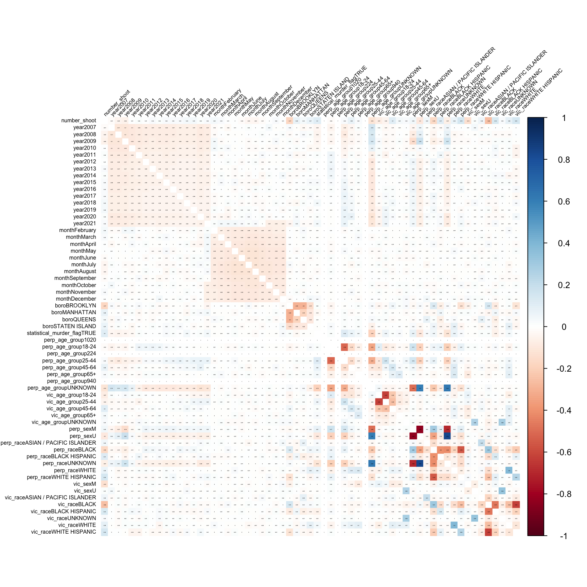
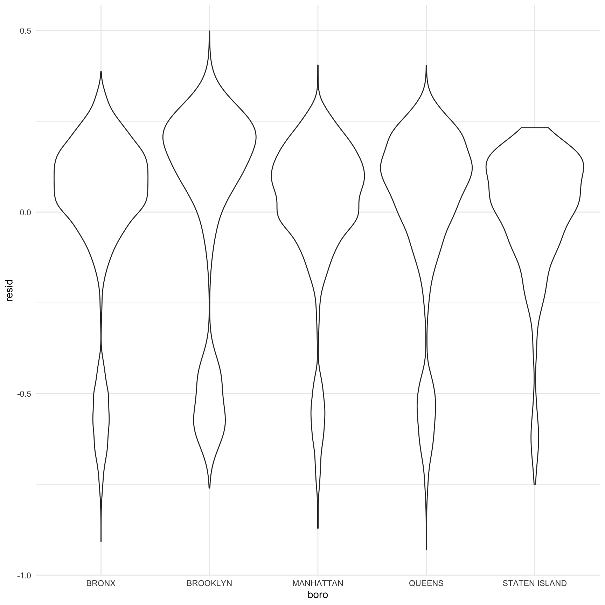
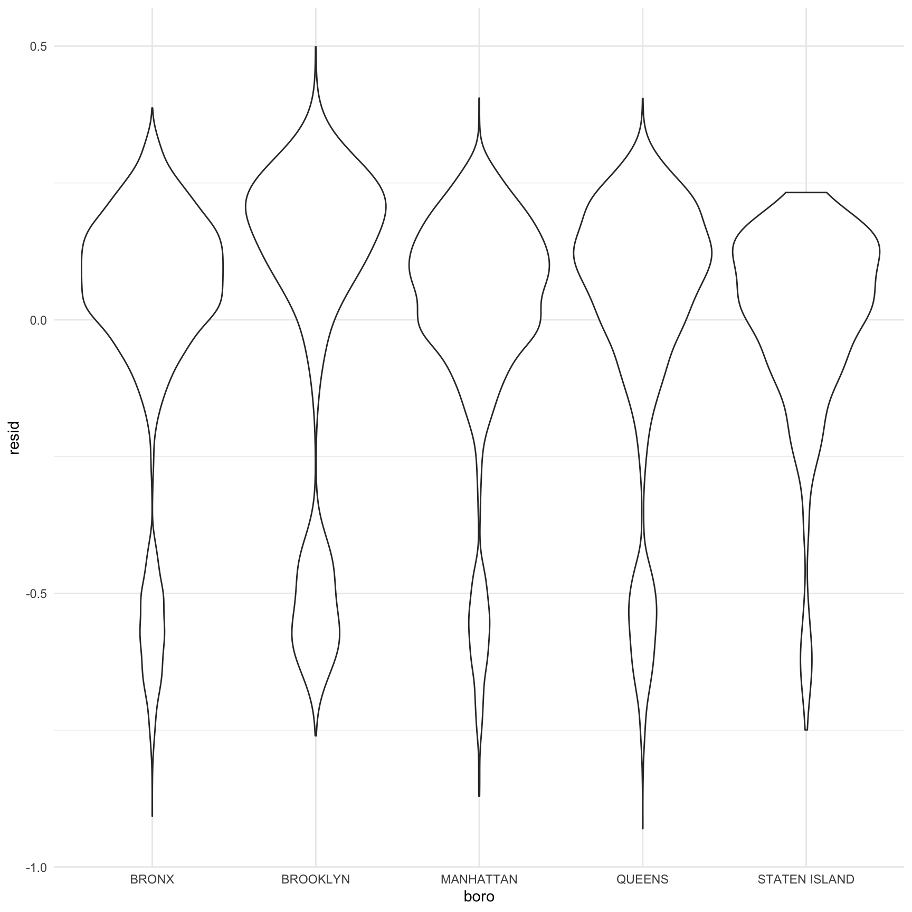

Regression Analysis
Dataset Demonsatration
The NYPD Shooting Data was collected from the NYC Open Data. The dataset includes 1,531 rows and 19 columns. The variables included in the dataset were listed below:
year. year of shooting incidentmonth. month of the shooting incidentday. day of the shooting incidentboro. borough where the shooting incident occurredlocation_desc. location of the shooting incidentstatistical_murder_flag. Shooting resulted in the victim’s death which would be counted as a murderperp_age_group. perpetrator’s age within a categoryperp_sex. perpetrator’s sex descriptionperp_race. perpetrator’s race descriptionvic_age_group. victim’s age within a categoryvic_sex. victim’s sex descriptionvic_race. victim’s race descriptionzipcode. zipcode of the shooting incident
Multiple linear regression model
Box-Cox transformation
The box-cox method is applied in the model to determine the transformation of outcome variable. The variable location_desc includes too many missing value. It was not included in the multiple linear regression analysis. All the missing values from our dataset was omitted. The λ is close to - 2, 1 / Y^2 transformation is applied.

Regression analysis results
| term | estimate | std.error | statistic | p.value |
|---|---|---|---|---|
| (Intercept) | 1.407 | 0.214 | 6.585 | 0.000 |
| Year:2007 | 0.049 | 0.011 | 4.660 | 0.000 |
| Year:2008 | 0.015 | 0.010 | 1.388 | 0.165 |
| Year:2009 | 0.004 | 0.011 | 0.415 | 0.678 |
| Year:2010 | 0.061 | 0.011 | 5.415 | 0.000 |
| Year:2011 | 0.061 | 0.012 | 5.106 | 0.000 |
| Year:2012 | 0.064 | 0.013 | 4.995 | 0.000 |
| Year:2013 | 0.089 | 0.013 | 6.706 | 0.000 |
| Year:2014 | 0.061 | 0.013 | 4.605 | 0.000 |
| Year:2015 | 0.063 | 0.013 | 4.855 | 0.000 |
| Year:2016 | 0.074 | 0.014 | 5.398 | 0.000 |
| Year:2017 | 0.096 | 0.014 | 6.763 | 0.000 |
| Year:2018 | 0.081 | 0.014 | 5.611 | 0.000 |
| Year:2019 | 0.113 | 0.014 | 7.913 | 0.000 |
| Year:2020 | 0.055 | 0.013 | 4.333 | 0.000 |
| Year:2021 | 0.052 | 0.013 | 3.887 | 0.000 |
| Month:February | 0.028 | 0.013 | 2.105 | 0.035 |
| Month:March | 0.006 | 0.013 | 0.517 | 0.605 |
| Month:April | -0.002 | 0.012 | -0.193 | 0.847 |
| Month:May | -0.015 | 0.012 | -1.292 | 0.196 |
| Month:June | -0.035 | 0.012 | -3.057 | 0.002 |
| Month:July | -0.039 | 0.011 | -3.386 | 0.001 |
| Month:August | -0.039 | 0.011 | -3.401 | 0.001 |
| Month:September | -0.020 | 0.012 | -1.685 | 0.092 |
| Month:October | -0.017 | 0.012 | -1.379 | 0.168 |
| Month:November | 0.003 | 0.012 | 0.234 | 0.815 |
| Month:December | -0.012 | 0.012 | -0.994 | 0.320 |
| Borough:BROOKLYN | -0.065 | 0.006 | -10.586 | 0.000 |
| Borough:MANHATTAN | 0.047 | 0.007 | 6.376 | 0.000 |
| Borough:QUEENS | 0.029 | 0.007 | 3.912 | 0.000 |
| Borough:STATEN ISLAND | 0.110 | 0.012 | 9.063 | 0.000 |
| Muder Flag:TRUE | 0.076 | 0.006 | 13.065 | 0.000 |
| Perpetrator age group:18-24 | -0.087 | 0.008 | -10.386 | 0.000 |
| Perpetrator age group:25-44 | -0.078 | 0.009 | -8.982 | 0.000 |
| Perpetrator age group:45-64 | -0.010 | 0.014 | -0.672 | 0.502 |
| Perpetrator age group:65+ | -0.089 | 0.037 | -2.403 | 0.016 |
| Perpetrator age group:UNKNOWN | -0.093 | 0.011 | -8.280 | 0.000 |
| Victim age group:18-24 | -0.081 | 0.008 | -10.440 | 0.000 |
| Victim age group:25-44 | -0.078 | 0.008 | -9.973 | 0.000 |
| Victim age group:45-64 | 0.024 | 0.011 | 2.236 | 0.025 |
| Victim age group:65+ | 0.018 | 0.025 | 0.730 | 0.465 |
| Victim age group:UNKNOWN | 0.015 | 0.038 | 0.397 | 0.692 |
| Perpetrator sex:M | -0.111 | 0.014 | -7.724 | 0.000 |
| Perpetrator sex:U | -0.238 | 0.022 | -10.821 | 0.000 |
| Perpetrator race:ASIAN / PACIFIC ISLANDER | -0.047 | 0.189 | -0.247 | 0.805 |
| Perpetrator race:BLACK | -0.139 | 0.188 | -0.739 | 0.460 |
| Perpetrator race:BLACK HISPANIC | -0.032 | 0.188 | -0.169 | 0.866 |
| Perpetrator race:UNKNOWN | -0.009 | 0.188 | -0.050 | 0.960 |
| Perpetrator race:WHITE | -0.105 | 0.189 | -0.557 | 0.578 |
| Perpetrator race:WHITE HISPANIC | -0.054 | 0.188 | -0.286 | 0.775 |
| Victim sex:M | -0.116 | 0.007 | -16.299 | 0.000 |
| Victim sex:U | -0.048 | 0.096 | -0.497 | 0.619 |
| Victim race:ASIAN / PACIFIC ISLANDER | -0.026 | 0.102 | -0.259 | 0.796 |
| Victim race:BLACK | -0.176 | 0.100 | -1.754 | 0.080 |
| Victim race:BLACK HISPANIC | -0.037 | 0.101 | -0.370 | 0.711 |
| Victim race:UNKNOWN | -0.015 | 0.109 | -0.142 | 0.887 |
| Victim race:WHITE | -0.051 | 0.101 | -0.502 | 0.616 |
| Victim race:WHITE HISPANIC | -0.062 | 0.101 | -0.618 | 0.536 |
Our regression model included year, month, borough, perpetrator’s age group, sex and race, and victim’s age group, sex and race as the predictors. The regression results year, borough, perpetrator's sex and age group, and victim's sex and age group are significant predictor variable for the number of shooting in NYC. Among the month variable, May, June, July, August, September, October, and December have lower number of shooting than January.And among the borough, compared with Bronx, Brooklyn have less number of shooting, and Manhattan, Queens, and Staten Island have more number of shooting.Among perpetrators, age under 18 have more number of shooting than other age groups. Among victims, 45-64 years old and 65+ years old have more number of shooting that age under 18 group.The next step is to use stepwise regression in backward direction to build our regression model.
backward stepwise regression
## Start: AIC=-33522.97
## number_shoot ~ year + month + boro + statistical_murder_flag +
## perp_age_group + vic_age_group + perp_sex + perp_race + vic_sex +
## vic_race
##
## Df Sum of Sq RSS AIC
## <none> 883.75 -33523
## - month 11 4.409 888.16 -33482
## - perp_sex 2 8.286 892.04 -33409
## - year 15 10.861 894.62 -33399
## - perp_age_group 5 10.269 894.02 -33387
## - statistical_murder_flag 1 11.987 895.74 -33355
## - vic_age_group 5 17.508 901.26 -33285
## - vic_sex 2 18.685 902.44 -33262
## - perp_race 6 21.002 904.76 -33238
## - boro 4 28.682 912.44 -33127
## - vic_race 6 40.486 924.24 -32969| term | estimate | std.error | statistic | p.value |
|---|---|---|---|---|
| (Intercept) | 1.407 | 0.214 | 6.585 | 0.000 |
| Year:2007 | 0.049 | 0.011 | 4.660 | 0.000 |
| Year:2008 | 0.015 | 0.010 | 1.388 | 0.165 |
| Year:2009 | 0.004 | 0.011 | 0.415 | 0.678 |
| Year:2010 | 0.061 | 0.011 | 5.415 | 0.000 |
| Year:2011 | 0.061 | 0.012 | 5.106 | 0.000 |
| Year:2012 | 0.064 | 0.013 | 4.995 | 0.000 |
| Year:2013 | 0.089 | 0.013 | 6.706 | 0.000 |
| Year:2014 | 0.061 | 0.013 | 4.605 | 0.000 |
| Year:2015 | 0.063 | 0.013 | 4.855 | 0.000 |
| Year:2016 | 0.074 | 0.014 | 5.398 | 0.000 |
| Year:2017 | 0.096 | 0.014 | 6.763 | 0.000 |
| Year:2018 | 0.081 | 0.014 | 5.611 | 0.000 |
| Year:2019 | 0.113 | 0.014 | 7.913 | 0.000 |
| Year:2020 | 0.055 | 0.013 | 4.333 | 0.000 |
| Year:2021 | 0.052 | 0.013 | 3.887 | 0.000 |
| Month:February | 0.028 | 0.013 | 2.105 | 0.035 |
| Month:March | 0.006 | 0.013 | 0.517 | 0.605 |
| Month:April | -0.002 | 0.012 | -0.193 | 0.847 |
| Month:May | -0.015 | 0.012 | -1.292 | 0.196 |
| Month:June | -0.035 | 0.012 | -3.057 | 0.002 |
| Month:July | -0.039 | 0.011 | -3.386 | 0.001 |
| Month:August | -0.039 | 0.011 | -3.401 | 0.001 |
| Month:September | -0.020 | 0.012 | -1.685 | 0.092 |
| Month:October | -0.017 | 0.012 | -1.379 | 0.168 |
| Month:November | 0.003 | 0.012 | 0.234 | 0.815 |
| Month:December | -0.012 | 0.012 | -0.994 | 0.320 |
| Borough:BROOKLYN | -0.065 | 0.006 | -10.586 | 0.000 |
| Borough:MANHATTAN | 0.047 | 0.007 | 6.376 | 0.000 |
| Borough:QUEENS | 0.029 | 0.007 | 3.912 | 0.000 |
| Borough:STATEN ISLAND | 0.110 | 0.012 | 9.063 | 0.000 |
| Muder Flag:TRUE | 0.076 | 0.006 | 13.065 | 0.000 |
| Perpetrator age group:18-24 | -0.087 | 0.008 | -10.386 | 0.000 |
| Perpetrator age group:25-44 | -0.078 | 0.009 | -8.982 | 0.000 |
| Perpetrator age group:45-64 | -0.010 | 0.014 | -0.672 | 0.502 |
| Perpetrator age group:65+ | -0.089 | 0.037 | -2.403 | 0.016 |
| Perpetrator age group:UNKNOWN | -0.093 | 0.011 | -8.280 | 0.000 |
| Victim age group:18-24 | -0.081 | 0.008 | -10.440 | 0.000 |
| Victim age group:25-44 | -0.078 | 0.008 | -9.973 | 0.000 |
| Victim age group:45-64 | 0.024 | 0.011 | 2.236 | 0.025 |
| Victim age group:65+ | 0.018 | 0.025 | 0.730 | 0.465 |
| Victim age group:UNKNOWN | 0.015 | 0.038 | 0.397 | 0.692 |
| Perpetrator sex:M | -0.111 | 0.014 | -7.724 | 0.000 |
| Perpetrator sex:U | -0.238 | 0.022 | -10.821 | 0.000 |
| Perpetrator race:ASIAN / PACIFIC ISLANDER | -0.047 | 0.189 | -0.247 | 0.805 |
| Perpetrator race:BLACK | -0.139 | 0.188 | -0.739 | 0.460 |
| Perpetrator race:BLACK HISPANIC | -0.032 | 0.188 | -0.169 | 0.866 |
| Perpetrator race:UNKNOWN | -0.009 | 0.188 | -0.050 | 0.960 |
| Perpetrator race:WHITE | -0.105 | 0.189 | -0.557 | 0.578 |
| Perpetrator race:WHITE HISPANIC | -0.054 | 0.188 | -0.286 | 0.775 |
| Victim sex:M | -0.116 | 0.007 | -16.299 | 0.000 |
| Victim sex:U | -0.048 | 0.096 | -0.497 | 0.619 |
| Victim race:ASIAN / PACIFIC ISLANDER | -0.026 | 0.102 | -0.259 | 0.796 |
| Victim race:BLACK | -0.176 | 0.100 | -1.754 | 0.080 |
| Victim race:BLACK HISPANIC | -0.037 | 0.101 | -0.370 | 0.711 |
| Victim race:UNKNOWN | -0.015 | 0.109 | -0.142 | 0.887 |
| Victim race:WHITE | -0.051 | 0.101 | -0.502 | 0.616 |
| Victim race:WHITE HISPANIC | -0.062 | 0.101 | -0.618 | 0.536 |
The backward stepwise regression chose the regression model with minimum AIC value. However, the stepwise regression did not omit any predictor, which indicates that the current regression model is sufficient to explain the outcome - number of shooing in NYC.
Correlation Matrix
cor_data =
cor(cbind(number_shoot = pull(mlr_lm, number_shoot),
model.matrix(number_shoot ~ year + month + boro + statistical_murder_flag + perp_age_group + vic_age_group + perp_sex + perp_race + vic_sex + vic_race, data = mlr_lm)[,-1])
)
cor_data %>%
corrplot(method = "color", addCoef.col = "black", tl.col = "black", tl.srt = 45, tl.cex = 0.5, insig = "blank", number.cex = 0.1,diag = FALSE)
The correlation analysis of NYC shooting data shows that the unknown sex and race of perpetrator is highly collinearited. And most of other variables are acceptable.
Multiple Linear Regression diagnose
##
## Call:
## lm(formula = number_shoot ~ year + month + boro + statistical_murder_flag +
## perp_age_group + vic_age_group + perp_sex + perp_race + vic_sex +
## vic_race, data = mlr_lm)
##
## Residuals:
## Min 1Q Median 3Q Max
## -0.92978 -0.05159 0.08218 0.17605 0.49877
##
## Coefficients:
## Estimate Std. Error t value Pr(>|t|)
## (Intercept) 1.406603 0.213614 6.585 4.74e-11 ***
## year2007 0.048944 0.010503 4.660 3.20e-06 ***
## year2008 0.014533 0.010473 1.388 0.165231
## year2009 0.004493 0.010816 0.415 0.677875
## year2010 0.060889 0.011244 5.415 6.23e-08 ***
## year2011 0.061287 0.012002 5.106 3.33e-07 ***
## year2012 0.063999 0.012813 4.995 5.96e-07 ***
## year2013 0.089494 0.013346 6.706 2.09e-11 ***
## year2014 0.061202 0.013290 4.605 4.16e-06 ***
## year2015 0.063086 0.012993 4.855 1.22e-06 ***
## year2016 0.073959 0.013701 5.398 6.86e-08 ***
## year2017 0.095977 0.014192 6.763 1.41e-11 ***
## year2018 0.080799 0.014401 5.611 2.06e-08 ***
## year2019 0.113096 0.014292 7.913 2.72e-15 ***
## year2020 0.054713 0.012628 4.333 1.48e-05 ***
## year2021 0.052150 0.013417 3.887 0.000102 ***
## monthFebruary 0.027681 0.013153 2.105 0.035347 *
## monthMarch 0.006494 0.012553 0.517 0.604912
## monthApril -0.002345 0.012164 -0.193 0.847118
## monthMay -0.014973 0.011585 -1.292 0.196212
## monthJune -0.035405 0.011583 -3.057 0.002242 **
## monthJuly -0.038586 0.011396 -3.386 0.000712 ***
## monthAugust -0.038710 0.011381 -3.401 0.000673 ***
## monthSeptember -0.019894 0.011805 -1.685 0.091971 .
## monthOctober -0.016617 0.012054 -1.379 0.168063
## monthNovember 0.002905 0.012399 0.234 0.814748
## monthDecember -0.012422 0.012491 -0.994 0.319999
## boroBROOKLYN -0.064692 0.006111 -10.586 < 2e-16 ***
## boroMANHATTAN 0.046723 0.007328 6.376 1.88e-10 ***
## boroQUEENS 0.028754 0.007351 3.912 9.22e-05 ***
## boroSTATEN ISLAND 0.110384 0.012180 9.063 < 2e-16 ***
## statistical_murder_flagTRUE 0.076203 0.005833 13.065 < 2e-16 ***
## perp_age_group18-24 -0.087198 0.008396 -10.386 < 2e-16 ***
## perp_age_group25-44 -0.078128 0.008698 -8.982 < 2e-16 ***
## perp_age_group45-64 -0.009583 0.014262 -0.672 0.501654
## perp_age_group65+ -0.088533 0.036841 -2.403 0.016270 *
## perp_age_groupUNKNOWN -0.092956 0.011227 -8.280 < 2e-16 ***
## vic_age_group18-24 -0.081471 0.007804 -10.440 < 2e-16 ***
## vic_age_group25-44 -0.078179 0.007839 -9.973 < 2e-16 ***
## vic_age_group45-64 0.024202 0.010822 2.236 0.025341 *
## vic_age_group65+ 0.018436 0.025256 0.730 0.465427
## vic_age_groupUNKNOWN 0.015175 0.038266 0.397 0.691702
## perp_sexM -0.110736 0.014337 -7.724 1.21e-14 ***
## perp_sexU -0.237753 0.021972 -10.821 < 2e-16 ***
## perp_raceASIAN / PACIFIC ISLANDER -0.046742 0.189275 -0.247 0.804948
## perp_raceBLACK -0.138725 0.187806 -0.739 0.460125
## perp_raceBLACK HISPANIC -0.031729 0.187976 -0.169 0.865960
## perp_raceUNKNOWN -0.009432 0.188381 -0.050 0.960068
## perp_raceWHITE -0.105051 0.188667 -0.557 0.577669
## perp_raceWHITE HISPANIC -0.053821 0.187893 -0.286 0.774543
## vic_sexM -0.116341 0.007138 -16.299 < 2e-16 ***
## vic_sexU -0.047737 0.095972 -0.497 0.618914
## vic_raceASIAN / PACIFIC ISLANDER -0.026410 0.101902 -0.259 0.795505
## vic_raceBLACK -0.176157 0.100457 -1.754 0.079532 .
## vic_raceBLACK HISPANIC -0.037284 0.100644 -0.370 0.711051
## vic_raceUNKNOWN -0.015496 0.108754 -0.142 0.886694
## vic_raceWHITE -0.050819 0.101298 -0.502 0.615903
## vic_raceWHITE HISPANIC -0.062197 0.100574 -0.618 0.536311
## ---
## Signif. codes: 0 '***' 0.001 '**' 0.01 '*' 0.05 '.' 0.1 ' ' 1
##
## Residual standard error: 0.265 on 12585 degrees of freedom
## Multiple R-squared: 0.1945, Adjusted R-squared: 0.1908
## F-statistic: 53.3 on 57 and 12585 DF, p-value: < 2.2e-16 

The residuals plot of year and borough did not show any distribution pattern which indicated the good fit of model. However, the residual density plot indicated some outliers.
Cross Validation between different regression models
Our cross validation include three different models. The first model includes all the predictors. The second model includes only the significant predictors. the third model includes interaction of borough and sex.
The cross validation section, the root mean square deviations were calculated for all the three models. the RMSE plot shows that RMSE of all model are similar. And the first model have the lowest RMSE, which indicates the first model may be the best model to explain the outcome - number of shooting in NYC.
Here’s the link back to Homepage page.